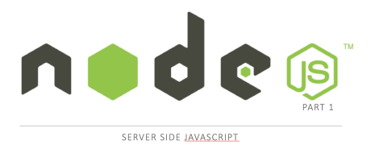
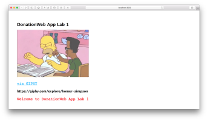
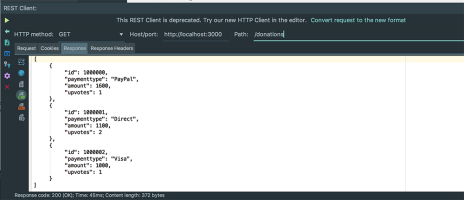

Assignments
Assignment-1
Assignment-2
Overview & Background
Module Overview
Introduction to Web Apps
Introduction & Background
JavaScript Overview
Introdcution to REST
Web Apps Overview
Setup
JS.Lab-01
JS.Lab-02
Web App Development
Node JS
Node - Part 1
Node - Part 2
Lab-01
Lab-02
Web App Development
David Drohan, WIT
Node JS
Node - Part 1

Node - Part 2
Lab-01

Lab-02
